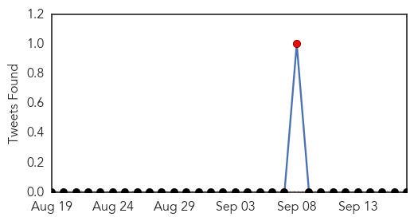
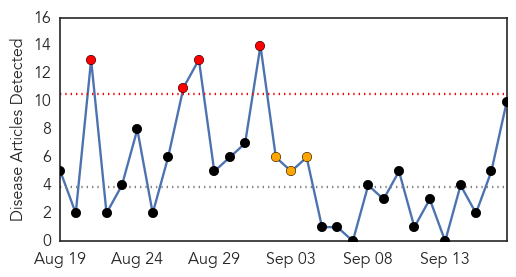
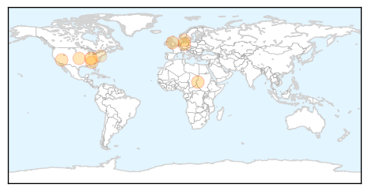
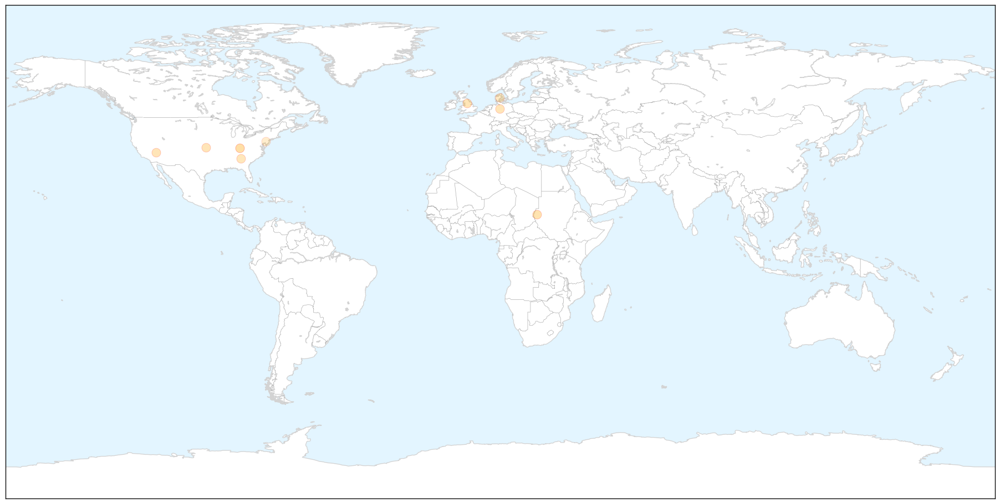
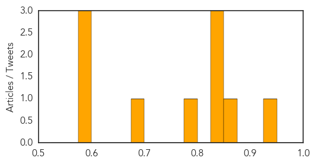

Yellow Fever
30-Day Web Trend
4 alerts, 0 warnings

30-Day Twitter Trend
1 alerts, 0 warnings

Article Locations


Article Confidences

Top Articles:
-
No articles found for Sep 17, 2015
Top Tweets:
-
No tweets found for Sep 17, 2015
Measles
30-Day Web Trend
4 alerts, 3 warnings

30-Day Twitter Trend
0 alerts, 0 warnings

Article Locations

X

Article Confidences
Top Articles:
- 0.929
- Malnutrition, measles killing Sudan's children
- 0.853
- 5 myths surrounding vaccines -- and the reality
- 0.838
- Here are 5 common myths, facts about vaccines
- 0.835
- Five myths surrounding vaccines — and the reality
- 0.830
- In Germany, disease prevention for refugees varies from state to state
- 0.797
- Vaccine Issue Arises at Republican Debate, to Doctors’ Dismay
- 0.677
- The origins of Donald Trump’s autism/vaccine theory and how it was completely debunked eons ago
- 0.586
- Immunizations Unknown: Pa. School Vaccine System Flawed
- 0.580
- Fact Check: Republicans Run Afoul of Medical Thinking With Autism Assertions
- 0.580
- First Draft: Fact Check: Republicans Run Afoul of Medical Thinking With Autism Assertions
Top Tweets:
-
No tweets found for Sep 17, 2015